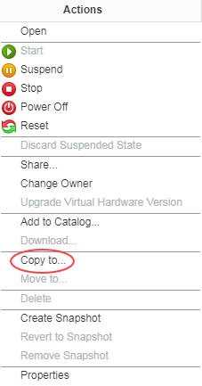
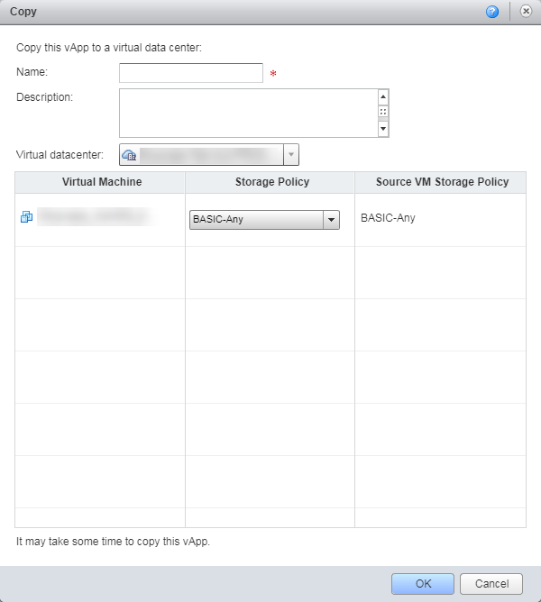
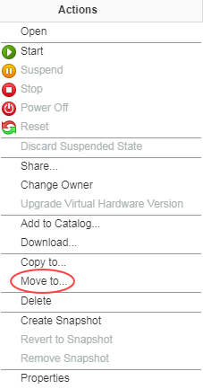
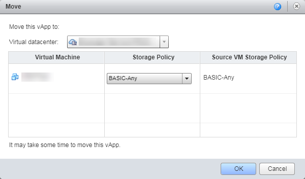

How to migrate vApps between virtual data centres
Overview
If you have multiple virtual data centres (VDCs), you may find that you want to migrate vApps from VDC to VDC; whether that be from a test and dev environment into production or between VDCs with different service levels.
There are two ways to migrate vApps between VDCs: copy and move. This article describes how to use these different methods to migrate your VDCs.
Copying a VDC
You may want to copy your vApp from one VDC to another VDC, leaving the original vApp in the source VDC that you can continue to use. You can perform the vApp copy operation on running vApps.
Note
As this is a copy operation, this will create additional VMs which will be charged at the standard UKCloud rate.
To copy a vApp:
In vCloud Director, select the My Cloud tab.

Right-click the vApp you want to copy and select Copy to.

In the Copy dialog box, you can rename the vApp and select which VDC you want to migrate it to. You can also change the storage policy for each virtual machines (VMs) within the vApp.

When you're happy with the configuration, click OK to begin the copy operation.
Note
The copy operation may take some time and the performance of any running VMs within the source vApp may be impacted due to the copy process.
Moving a VDC
You may want to completely move your vApp from one VDC to another VDC. This will remove the vApp from the source VDC and move it to the destination. To perform this operation, the vApp must be powered off.
To move a vApp:
In vCloud Director, select the My Cloud tab.
Find the vApp that you want to move and ensure that it is completely powered off by right-clicking the vApp and selecting Power Off.
When the vApp is powered off, right-click it and select Move to.

In the Move dialog box, you can select which VDC you want to migrate the vApp to. You can also change the storage policy for each VM witin the vApp.

When you're happy with the configuration, click OK to begin the move operation.
Note
It may take some time to move the vApp from one VDC to another.
When the move operation is complete, power the vApp back on by right-clicking it and selecting Start.
Feedback
If you find an issue with this article, click Improve this Doc to suggest a change. If you have an idea for how we could improve any of our services, visit UKCloud Ideas. Alternatively, you can contact us at products@ukcloud.com.